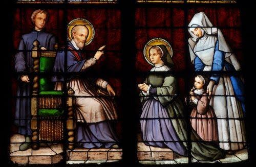

>

Jeanne-Françoise Frémyot, baronne de
Chantal.
Épouse, mère, veuve, fondatrice de
l’ordre de la Visitation
1572 - 1641
Prière de sainte Jeanne de Chantal
Seigneur, Bonté souveraine, je m’abandonne entre tes bras, dans les joies et les peines.
Conduis-moi où il te plaira. Je ne regarderai pas le chemin à suivre. Je ne regarderai que Toi,
ma Providence, ma Force, mon Rempart. Je ne regarderai que Toi qui me guides comme une
vraie mère. Je suivrai le chemin que Tu me traces, sans jamais regarder, ni éplucher les causes
des événements, sans me poser trop de “pourquoi”. Les yeux fermés, je ferai ta Volonté et non
pas la mienne. Je me tiendrai en repos, sans désirer autre chose que ce que Tu m’inspireras de
souhaiter. Je t’offre cette résolution, Seigneur ; je te demande de la bénir. J’y serai fidèle, en
me méfiant de ma faiblesse, et en m’appuyant sur ta bonté, ta générosité, ta miséricorde.
Seigneur, j’ai une confiance totale en Toi. Amen.
1 - Si le vent des tentations s’élève,
Si tu heurtes le rocher des épreuves.
Si les flots de l’ambition t’entraînent,
Si l’orage des passions se déchaîne : Regarde l’étoile, invoque Marie,
Si tu la suis, tu ne crains rien !
Regarde l’étoile, invoque Marie,
Elle te conduit sur le chemin !
2 - Dans l’angoisse et les périls, le doute, quand la nuit du désespoir te recouvre.
Si devant la gravité de tes fautes,
La pensée du jugement te tourmente :
3 - Si ton âme est envahie de colère, jalousie et trahison te submergent.
Si ton cœur est englouti dans le gouffre, emporté par les courants de tristesse :
4 - Elle se lève sur la mer, elle éclaire,
Son éclat et ses rayons illuminent.
Sa lumière resplendit sur la terre, dans les cieux et jusqu’au fond des abîmes,
Si tu la suis, tu ne dévies pas,
Si tu la pries, tu ne faiblis pas.
Tu ne crains rien, elle est avec toi, et jusqu’au port, elle te guidera.